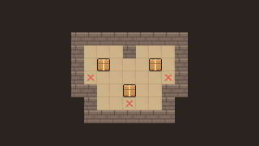
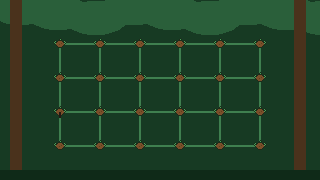
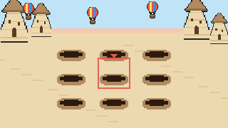

SUPER CAIT'S 40
¡Cait cumple 40 y la isla entera prepara la fiesta sorpresa!
Colgadín tiene un montón de invitaciones y un solo día para repartirlas por toda la isla. Explora, echa una mano a quien te encuentres por el camino y prepara la mejor fiesta sorpresa que se recuerda… sin que el cumpleañero se entere de nada.



Más de 20 amigos a los que invitar a la fiesta
Más de 15 pruebas distintas
Calcetines perdidos por todos los rincones
Un gachapón lleno de regalos
Banda sonora en chiptune
Y algún secreto que no cabe en la caja
1 jugadorGuardado automáticoOrdenador, móvil y tablet
Mindeos y los peluches de la isla. Ningún peluche resultó herido durante el desarrollo de este juego.
SUPER CAIT'S 40
40+AÑOS
40 ANIVERSARIO1 JUGADOR
SUPER
CAIT'S 40
¡FIESTA
SORPRESA!
SORPRESA!
Esta raya tiene que medir 10 cm: si mide menos, la impresora ha encogido la hoja